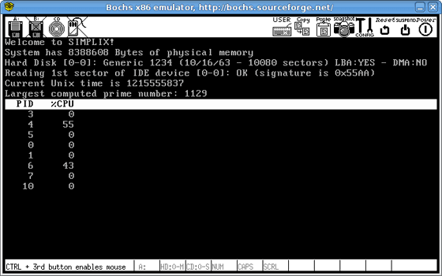

Over the past couple of weeks, I have been working on an IDE hard disk driver for my hobby operating system Simplix. This driver probes for existing IDE controllers, identifies the IDE devices connected to these controllers, and allows for reading/writing contiguous sectors from/to these devices. It communicates with IDE devices in PIO mode (no DMA) and does not support ATAPI devices (i.e. it does not offer any support for CD-ROM or DVD-ROM drives) At the same time, I also wrote a RAM disk driver, a simple block device interface, and a test program in the form of a kernel thread. This test program reads the first sector of the master IDE device connected to the primary IDE controller, and displays the last two bytes of this sector. These are usually 0x55aa (boot record signature)
Go ahead and take a look at the source code online. You can also download the Simplix distribution, compile it and run it either in Bochs/QEMU, or on a real PC. Below is a screen shot of Simplix running inside Bochs. Cheers!

Hey Julien,
I’ve been an avid reader of your blog for over a year now and I just wanted to tell you that I think you’re doing a fantastic job. Your work has really encouraged me as a developer, from your time at Yahoo working with the YUI team (compressor is great), to what you’re doing now writing an OS for a hobby. I really appreciate you having taken to time to write about what you do, it’s interesting stuff. I can only hope my own blog will one day be of the same caliber as yours.
I’ve been keen to get into some systems programming for ages now. Your source code is exactly what I’ve been looking for in terms of gaining a simple understanding of how it all fits together. By day I’m a web developer working mostly with Java but I’m always wanting to cut some lower level code. I’ve been fiddling around with Linux for a while but it’s just so massive it’s hard to know where to start. Simplix looks a great place to start. Anyway you’ve convinced me to go out and place an order on Amazon for the “C Programming Language” and “Operating Systems Design and Implementation” so I can have a bit of a play with the Simplix source code and hopefully understand what’s going on a little better.
Keep up the good work mate,
Dave
Julien,
First, I want to echo Dave’s comments – great job on Simplix! The code is an excellent learning tool for anyone interested in OS development on the IA32 architecture. Really nice stuff. It gives me something to aspire to.
The source code viewing pages are also very nice. How did you get things to display so nicely, with the source tree on the left and the numbered code file on the right? Are there some tools that are available in the YUI toolkit for this?
Thanks for sharing Simplix with us. I eagerly await your next post.
Peter
Hi Peter,
For the source tree, it’s nothing more than a little bit of PHP magic and some good ol’ markup and CSS. For the syntax highlighted source code, I use an open source syntax highlighter.
http://code.google.com/p/syntaxhighlighter/
Cheers!
Julien
Hi,
I have read your IDE code and I have one doubt. When you are reading or writing several contiguous sectors, unless you use the MULTIPLE commands, I think that you receive an IRQ for each sector.
In that case I think the code is not taking this into account (but maybe im wrong) because after the first interrupt it starts reading ALL the sectors from the data port.
Thanks,
Dani
Dear Juliean,
I love to try simplix on my windows machine.
But I am new to this subject.
So could you be kindenough to sent me a guidence to how to compile and run simplix .
And I want to thank you to share your konwlage with others.
Regards,
Sudheera